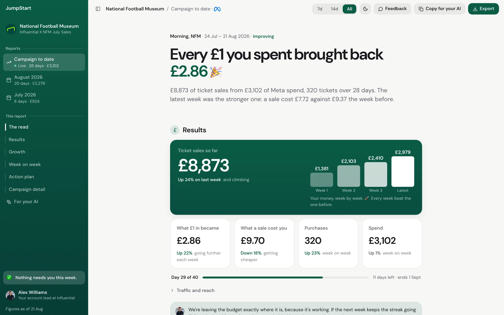
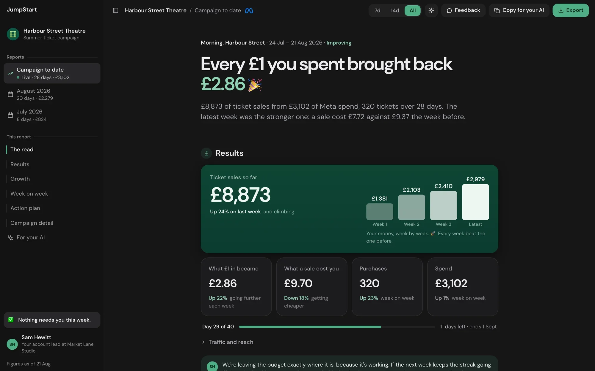
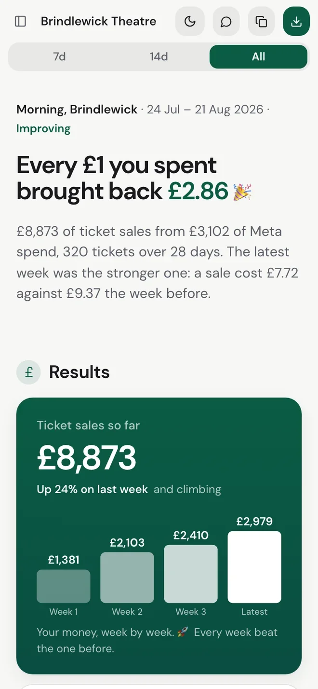
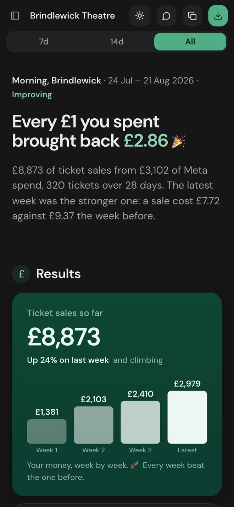
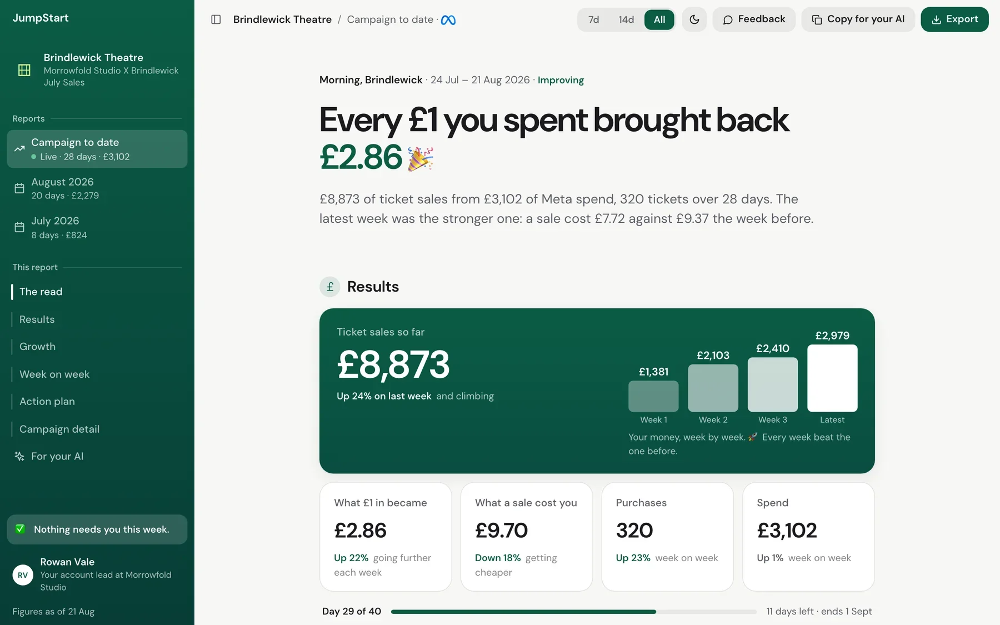
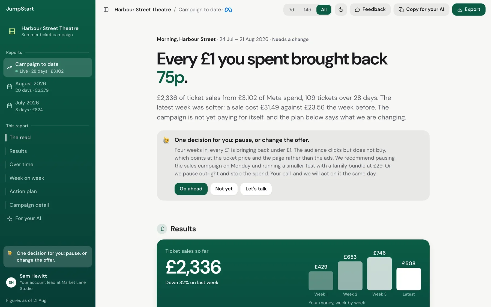
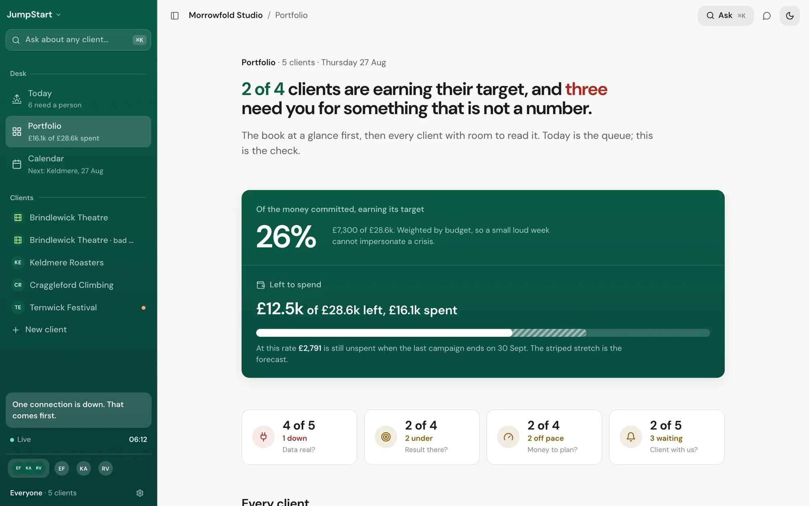
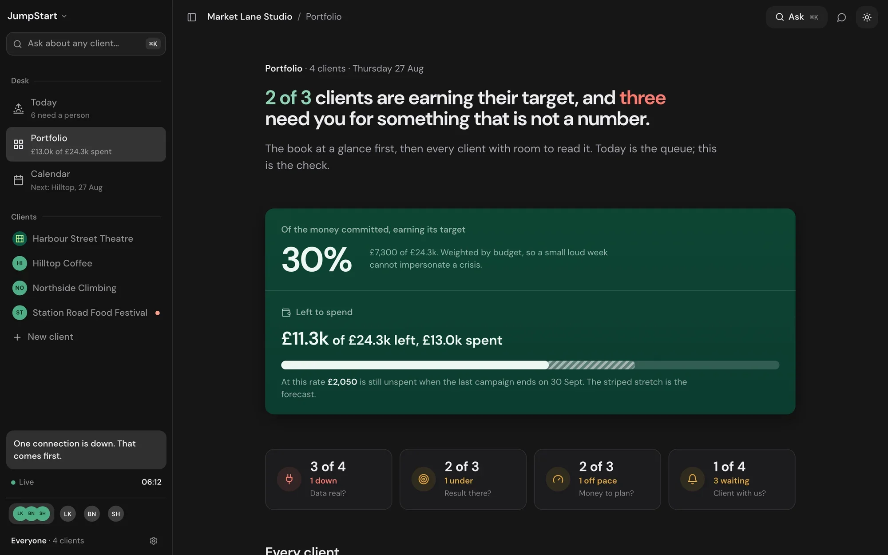
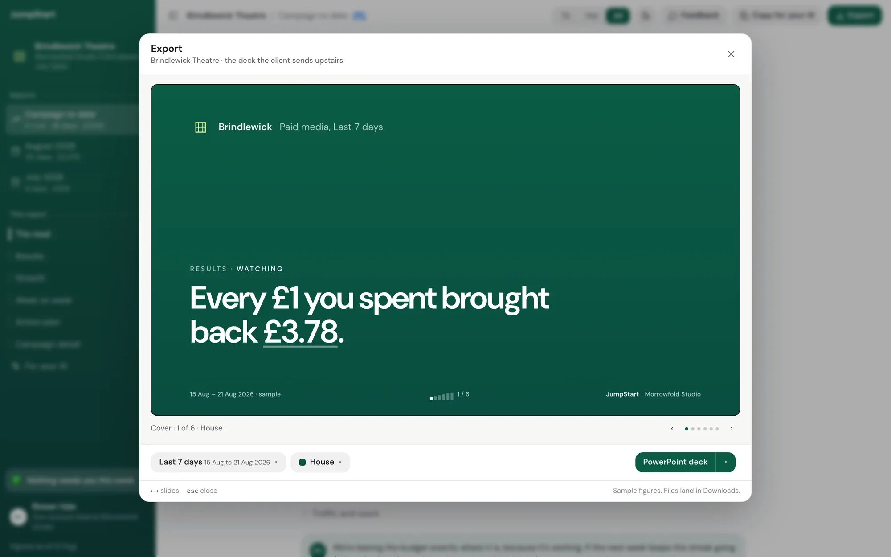

Paid media reporting that explains itself. Clients get a briefing in plain English.
It opens with one sentence, “Every £1 you spent brought back £2.86”, says whether anything needs you, and the account lead checks it before it reaches you. The numbers are there to back up the sentence.


The agency needed its own view. It opens on the whole book: how many clients are earning their target, how much budget is left, and which ones need a person for something that isn’t a number.


Pick any two dates, see the deck before it goes, then send it as a PowerPoint deck, a PDF of the deck, a full A4 report or an email. Until a person signs a report off, JumpStart stamps it as a draft.
